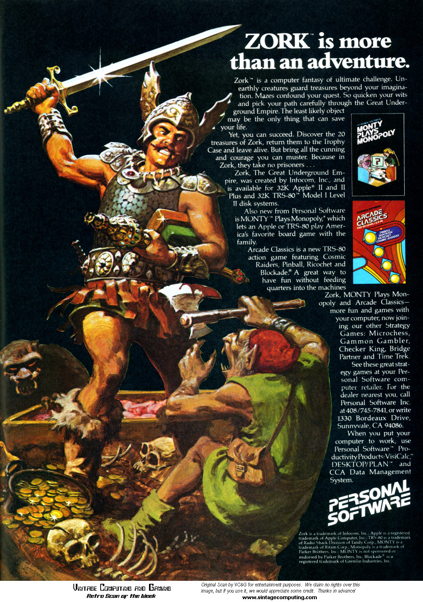
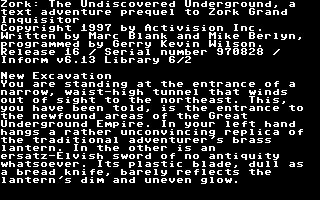
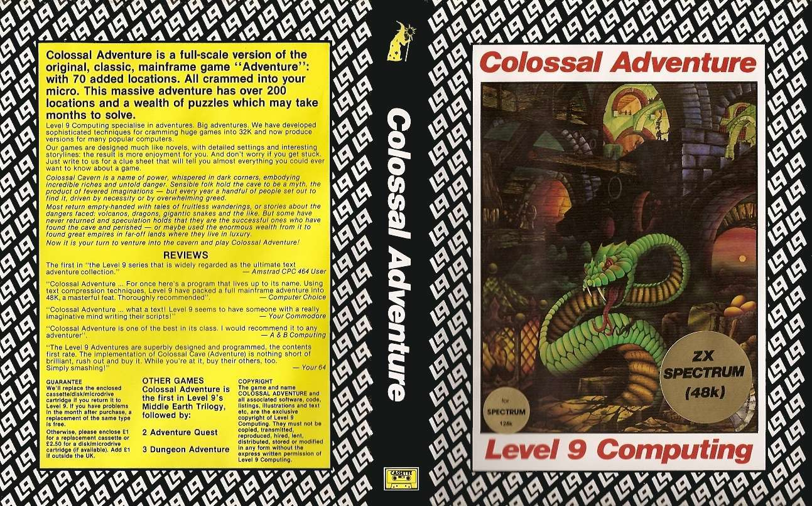
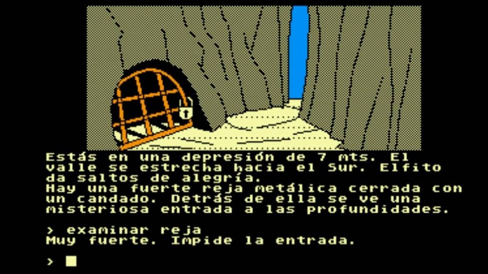
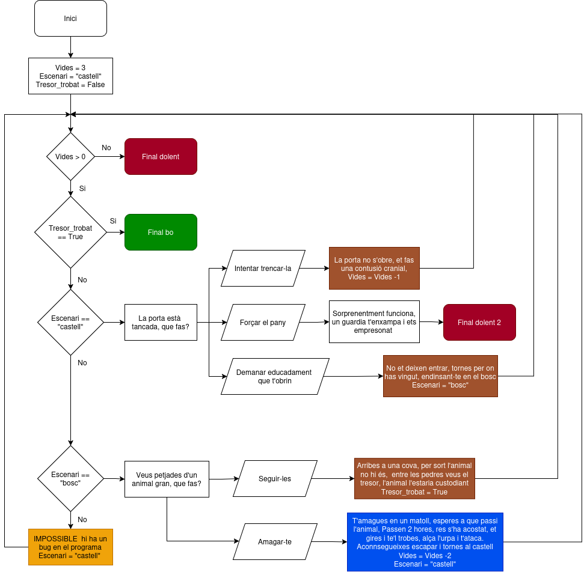

Projecte: Aventura Interactiva Retro
Objectiu
Els primers videojocs d'aventura dels anys 70 i 80, com "Colossal Cave Adventure" o "Zork", funcionaven completament amb text a través de la línia de comandaments. Aquests jocs permetien als jugadors explorar mons virtuals, resoldre trencaclosques i viure històries èpiques utilitzant només paraules. Ens toca reviure aquesta era daurada dels videojocs!




Desenvolupeu un joc d'aventura retro interactiu. Heu de crear un programa on l'usuari explori, prengui decisions estratègiques i gestioni la seva salut mentre intenta arribar al seu objectiu final.
Funcionalitat:
Sistema de Vida i Estat
El programa ha de gestionar:
- Punts de vida inicials (100)
- Ubicació actual del jugador
- Estat de victòria (objectiu assolit o no)
Bucle Principal del Joc
El joc s'ha d'executar en un bucle mentre:
- El jugador tingui vida (> 0)
- No hagi assolit l'objectiu final
Decisions Interactives
A cada ubicació, el jugador ha de poder triar entre diferents accions, per exemple:
- Explorar nous camins
- Enfrontar-se a perills
- Buscar objectes útils
- Interactuar amb personatges
Conseqüències de les Decisions
Cada decisió ha de tenir conseqüències:
- Pèrdua o guany de punts de vida
- Canvi d'ubicació
- Obtenció d'objectes especials
- Progrés cap a l'objectiu final
Condicionals Múltiples
El programa ha d'utilitzar estructures condicionals per:
- Determinar els resultats de cada acció
- Comprovar si es compleixen les condicions de victòria
- Gestionar les diferents ubicacions i els seus perills
Sortida del Programa
El programa ha d'anar informant a l'usuari sobre:
- Estat actual (vida, ubicació)
- Descripcions de cada escenari
- Opcions disponibles
- Resultats de les accions
- Missatge de victòria o derrota final
Personalitzeu el joc afegint nous llocs, enemics o objectes. Podeu crear una història única amb les vostres pròpies localitzacions i reptes! Si voleu incloure dibuixos podeu buscar art ASCII en repositoris com aquest o dibuixar-lo vosaltres amb programes com aquest
Exemple de sortida:
================================
AVENTURA INTERACTIVA
================================
Ets un explorador que busca el llegendari Tresor,
amagat en unes ruïnes perdudes. La teva missió és trobar
la manera d'accedir a la cambra del tresor i tornar amb èxit.
Punts de vida: 100
Pren decisions amb cura!
--- Vida actual: 100 ---
Et trobes davant les ruïnes antigues. La lluna il·lumina
les parets de pedra cobertes de heura.
A la teva dreta hi ha una gran porta de ferro amb una pany.
[1] Intentar obrir la porta de ferro
[2] Explorar el passadís de l'est
[3] Investigar la cova lateral
La teva elecció: 1
* La porta està tancada amb pany. No pots obrir-la *
Necessitaràs trobar la clau adequada.
--- Vida actual: 100 ---
Et trobes davant les ruïnes antigues. La porta de ferro
segueix tancada a la teva dreta.
[1] Explorar el passadís de l'est
[2] Investigar la cova lateral
La teva elecció: 1
Entres a la gran sala. Una figura amb armadura es mou a les ombres.
[1] Amagar-te darrere una columna
[2] Avançar amb l'espasa a la mà
[3] Cridar per alertar la figura
La teva acció: 1
* La figura passa de llarg sense veure't *
Continues sense danys.
--- Vida actual: 100 ---
L'arxiu antic està ple de prestatgeries polsoses.
Els llibres semblen portar segles sense ser tocats.
[1] Examinar els manuscrits
[2] Recórrer les prestatgeries
[3] Tornar a la sala anterior
La teva acció: 2
* Trobes una clau de ferro sota un volum antic *
La clau pot ser útil més endavant.
--- Vida actual: 100 ---
Tornes al passadís principal. De sobte, una ombra es mou
ràpidament cap a tu. És una ratpenat gegant!
[1] Intentar esquivar l'atac
[2] Enfrontar-te amb l'espasa
[3] Córrer cap enrere
La teva acció: 1
* El ratpenat et grata el braç amb les seves urpes *
/\ /\
/ \'._ (\_/) _.'/ \
|.''._'--(o.o)--'_.''.|
\_ / `;=/ " \=;` \ _/
`\__| \___/ |__/`
\(_|_)/
" ` "
Has pogut esquivar l'atac i despistar la criatura.
Perds 15 punts de vida!
--- Vida actual: 85 ---
Ara que tens la clau, recordes la porta de ferro
que no vas poder obrir al començament.
[1] Tornar a l'entrada principal amb la clau
[2] Continuar explorant el passadís
[3] Descansar per recuperar forces
La teva acció: 1
--- Vida actual: 85 ---
Tornes a l'entrada principal. La porta de ferro
segueix allà, esperant la clau correcta.
[1] Utilitzar la clau per obrir la porta
[2] Esperar i observar els voltants
[3] Tornar enrere
La teva acció: 1
* La clau encaixa perfectament i la porta s'obre *
Has accedit a la cambra del tresor!
================================
MISSIÓ COMPLETADA
================================
Has superat l'aventura!
Has trobat el Tresor!
Punts de vida finals: 85
Estructura narrativa
Per a mantenir la coherència narrativa del nostre joc, abans de començar a programar cal que feu un diagrama de flux de la vostra aventura. Podeu fer servir una eina online com aquesta

Requeriments Tècnics
- Utilitzar bucles while per mantenir el joc actiu
- Implementar condicionals if/elif/else per a les decisions
- Gestionar variables simples (vida, ubicació, estat)
- Assegurar que cada decisió tingui conseqüències coherents